TIN MINING IN BANGKA BELITUNG, INDONESIA.
The electronics industry uses some tin ore to solder electronic products, such as mobile devices like smartphones and tablets. You are not alone; almost half of the world’s population uses smartphones.
The people of Bangka Belitung still have a very high dependence on tin mining as an economic source. Tin is a vital mineral needed for the production of electronics. The second-largest of the world supply is located in Bangka Belitung Island, Indonesia, where men, women, and children all work without regard for their safety.
Indonesia is the second-largest tin producer in the world after China. In 2021, Indonesia’s total tin mining production will reach 83,000 tons. The mining results represent 26 percent of the world’s total mining production. The largest tin-producing region in Indonesia is Bangka Belitung Province, which contributes to the world’s tin needs. The electronics industry uses some tin ore to solder electronic products, such as mobile devices like smartphones and tablets. You are not alone; almost half of the world’s population uses smartphones.
The people of Bangka Belitung still have a very high dependence on tin mining as an economic source. Most of the people of Bangka Belitung, totaling 1,223,296 people, are tin mining workers. The cause of the rise of smallholder tin mining, called unconventional mining, is the regional autonomy policy in the early 2000s and changes in the tin trading system.
The rise of unconventional mining activities benefits the people of Bangka Belitung. But it also damages the environment and increases the dropout rate because schoolchildren are more interested in helping their parents work in the mines. According to data from the Education Authorities of the Bangka Belitung Islands Province for 2019–2021, there were 64,344 students, with a percentage of 86.3 percent dropping out of school due to unconventional tin mining. The number of children who dropped out of school was 2,348, and 7,418 people did not attend school.
The opening of legal and illegal tin mining lands that damage the environment has continued in recent years, both on land and at sea. Some environmental threats are soil erosion due to deforestation and the creation of artificial lakes that cause water overflow and flooding. The exploitation of nature also affects plant and animal species, including endemic flora and fauna extinction.
The rise of illegal mining has contributed to the expansion of critical land in Bangka Belitung. According to the Bangka Belitung Provincial Forestry Service, in 2019, the area of crucial land on Bangka Belitung Island had reached 20,078 hectares. A land area of 19,850.24 hectares, or 98.77 percent, was considered critical. The remaining 227.86 hectares are in the urgent category.
 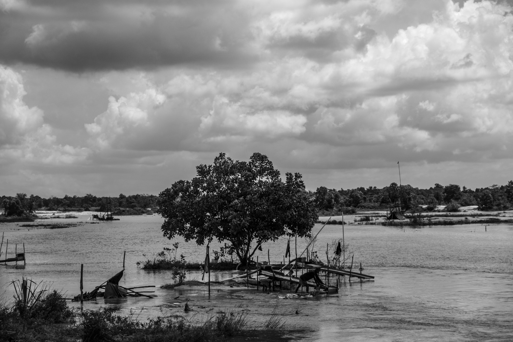
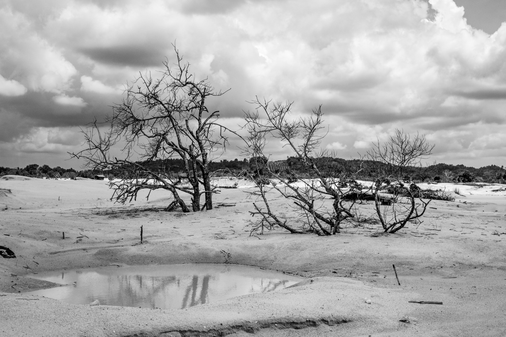
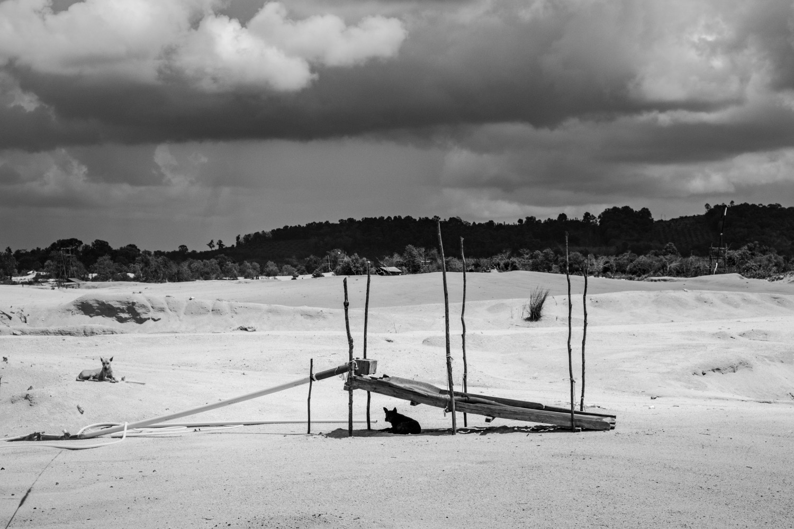
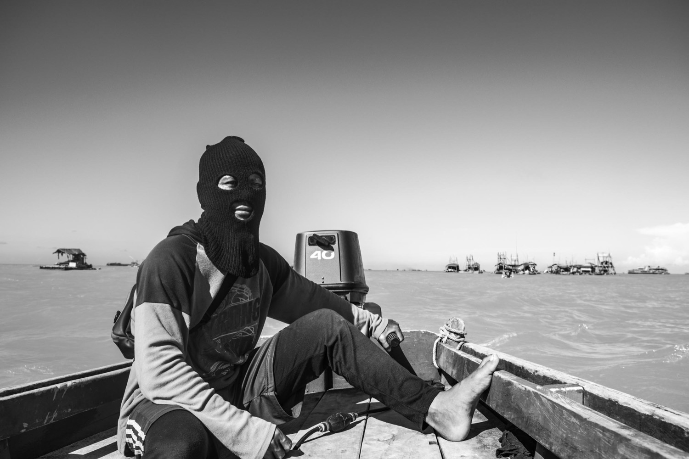
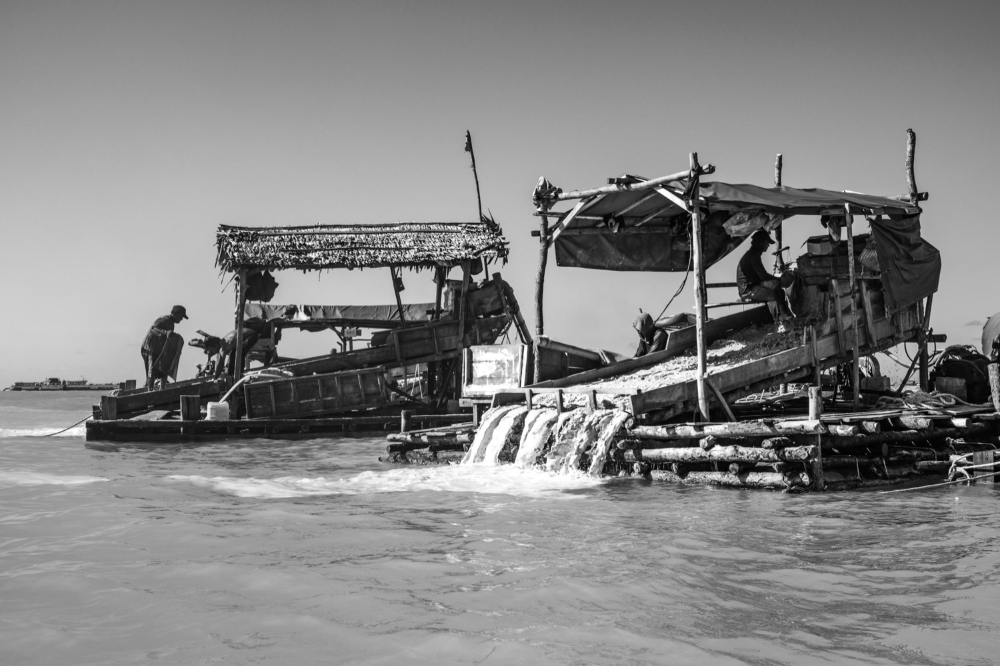
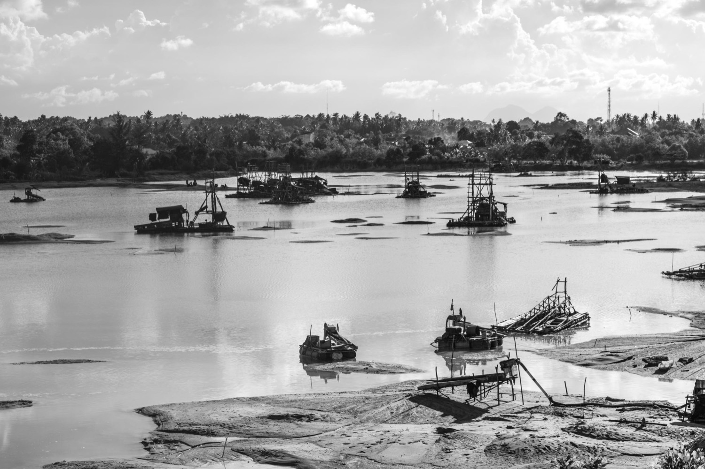
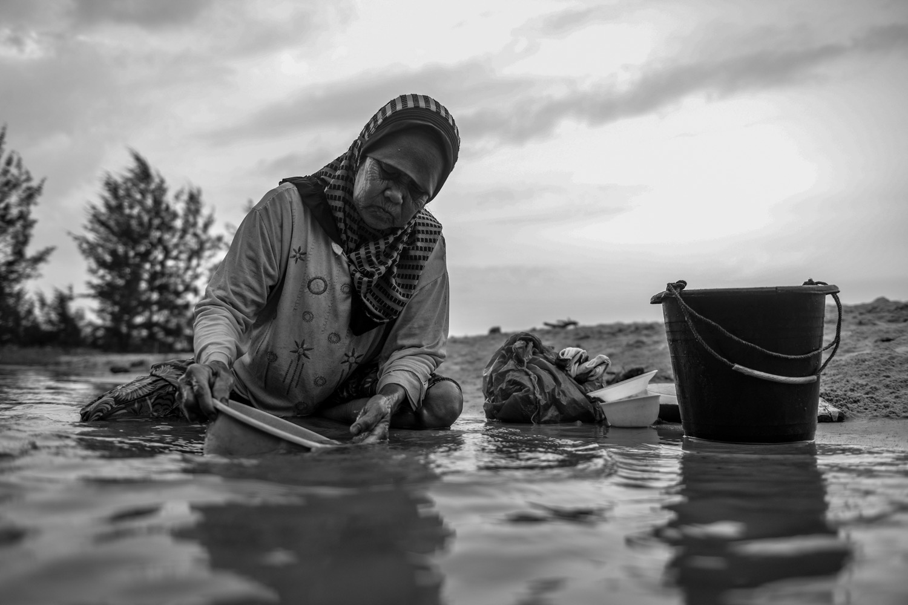
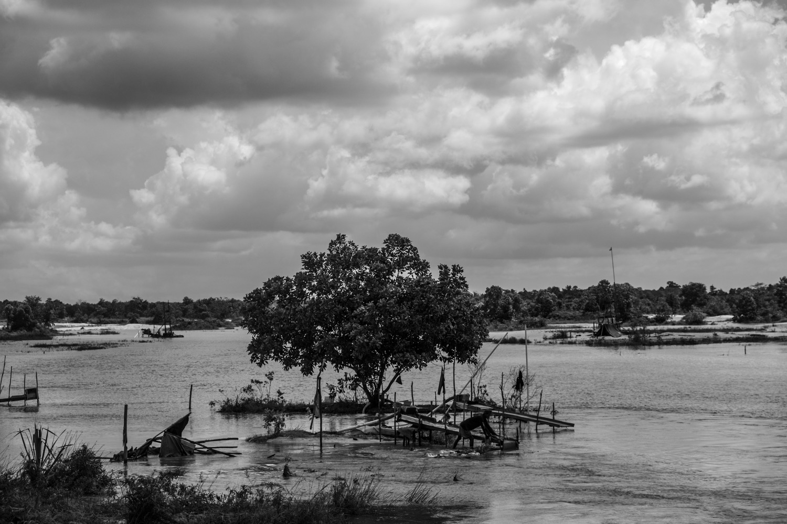
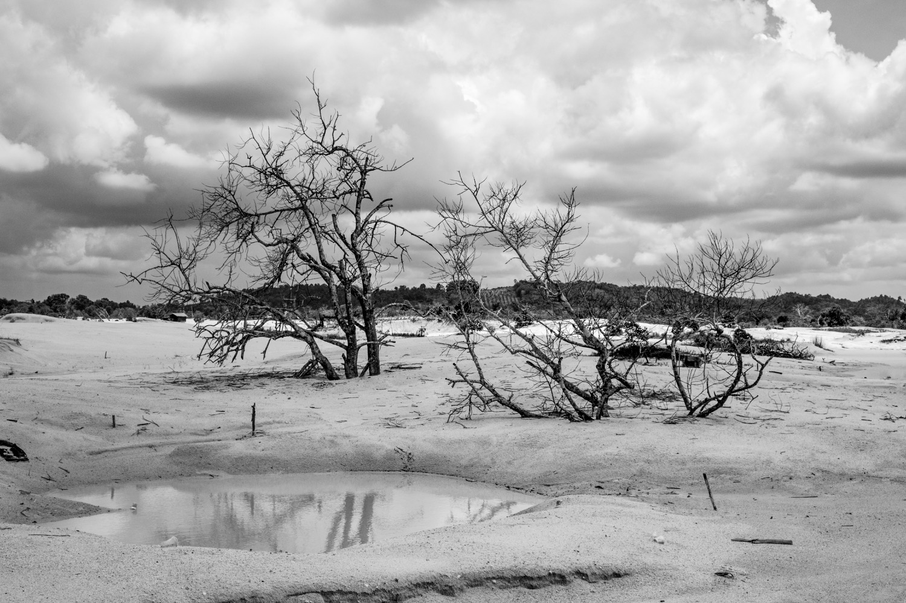
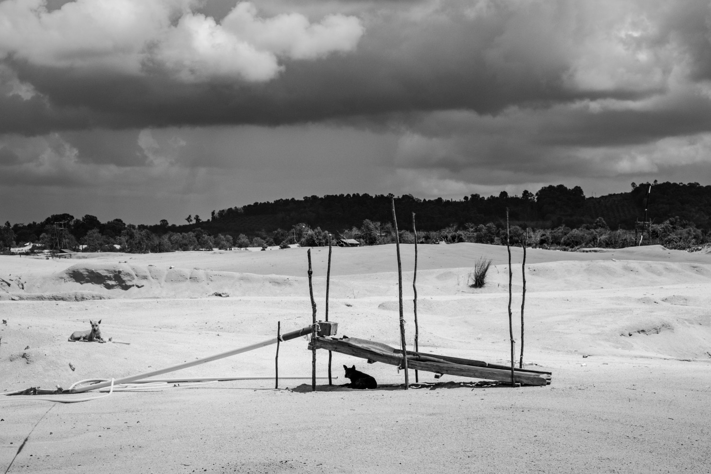
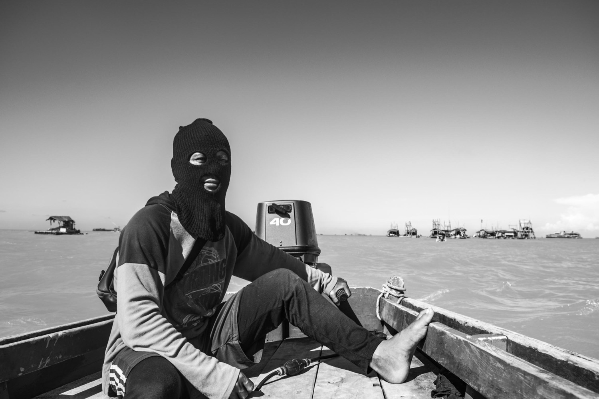
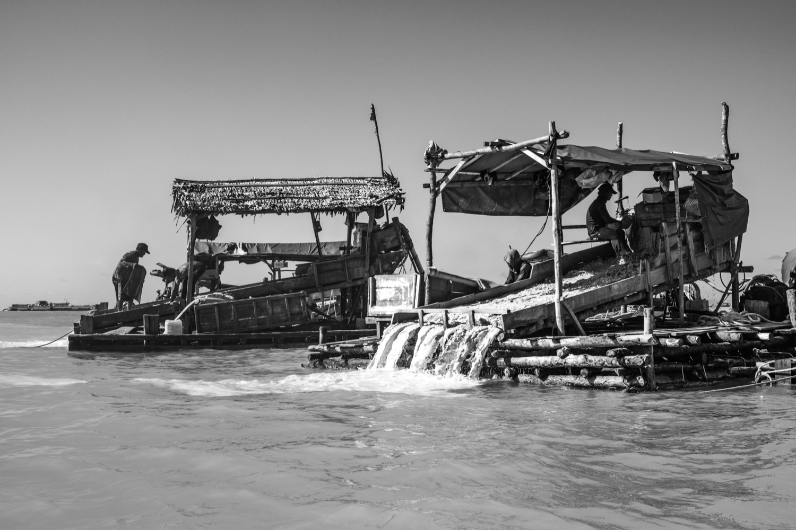
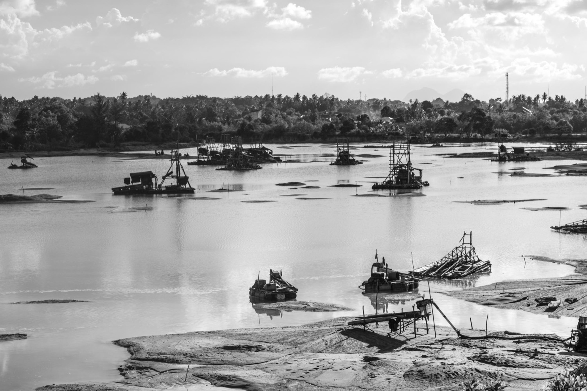
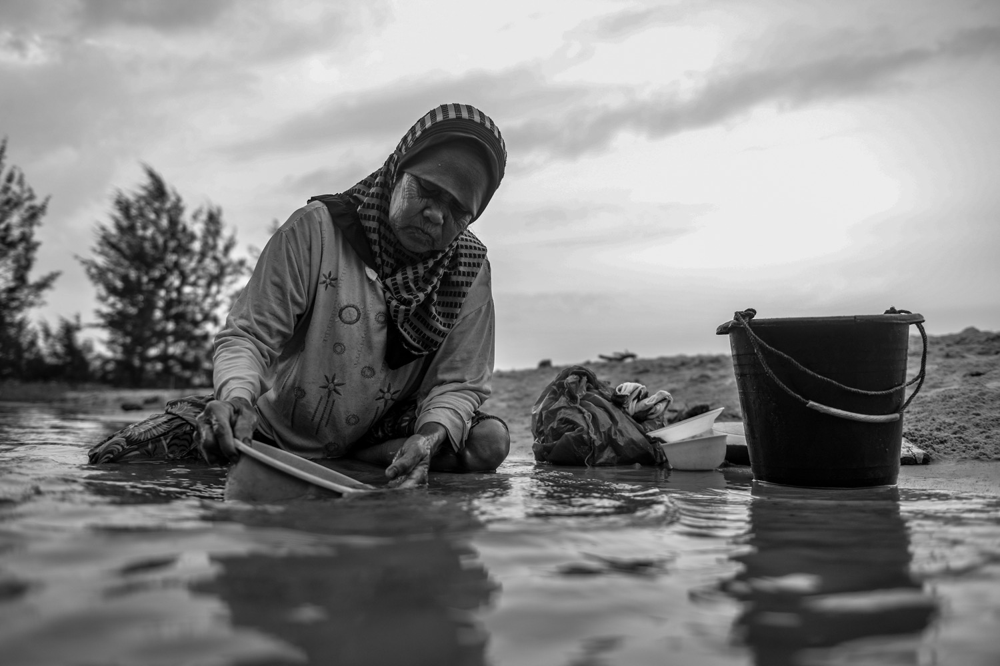